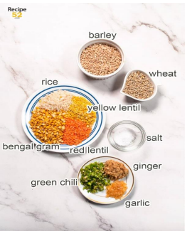
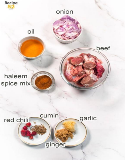

Haleem:

Ingredients:
For grains and lentils:
¾ cup whole wheat kernels,(gehoon)
¼ cup barley, or oats (jau)
2 tablespoonsrice
2 tablespoonsred lentil, (masoor dal)
2 tablespoons yellow lentil,(moong dal)
⅓ cup bengal gram, (chana dal)
1½ tablespoons green chilli
1 tablespoons ginger
1 tablespoons garlic paste
½ teaspoon salt

For Meat Curry:

4 tablespoons oil
1 large onion
2½ tablespoons haleem masala
½ kg boneless beef, plus extra bones
2 cup water
Tempering:
2 tablespoons oil, use oil used to fry sliced onions
1 tablespoon chopped ginger
1 tablespoon chopped garlic
½ teaspoon cumin seeds
4 round button chillies
Garnishes:
3 medium onions,skip if using ready-made fried onions
Ginger,sliced
Mint leaves
Chat masala
Green chillies,sliced, less spicy variety
Instructions:
For wheat and lentils:
1. Take wheat and barley in a pot. Wash and soak for 4 hours at least or preferably overnight.
2. Combine lentil and rice in another pot. Wash and soak for 2 hours.
3. Take soaked lentils, wheat and barley in a large heavy bottomed pot. Add salt, ginger, garlic, green
chilli paste and water. The level of water should be 2 inch above the grains.
4. Bring it to a boil then reduce heat to slow, cover the lid tightly and cook for 60 minutes until wheat
grains are soft and mushy. Keep stirring at intervals.
For Meat Curry:
5. In another pot fry thinly sliced onions until golden.
6. Now add meat and haleem spice mix to it. Mix well and stir fry on high heat for 2-3 minutes until
the color of meat changes. Then fill the pot with just enough to barely cover the meat.
7. Bring it to boil, then cover the pot tightly and cook for 30-45 minutes until tender. Meat curry is
ready, let it cool.
8. Remove meat (and bones, if using) from the curry with a slotted spoon, set aside.
9. Add the remaining gravy to the grains and lentil and blend it with an immersion blender. (Add cold
water if the mixture is too thick to avoid too much strain on the machine.) Set aside.
10. Shred the meat in the food processor in batches. (Discard the bones, if used.) Set aside.
For Tempering:
In the meat pot heat oil and fry garlic until lightly golden. Then all the ingredients of tempering and
fry for one minute.
12. Add the blended grain and lentil, shredded meat and yogurt in the tempering and mix well.
Continue to cook on slow heat.
Ghotna:
13. If the haleem is thick add water and adjust consistency. Stir with a ghotna or a sturdy wooden
spatula in a circular motion for 5-10 minutes with intervals for sticky and homogenised texture.
14. Do a taste test and adjust salt. Adjust heat if needed by adding more haleem spice mix
For Garnish:
15. Fry sliced onion in pan until golden. Work in two batches. Spread onions on kitchen towel so it gets
crispy.( Skip this step if using store brought fried onions.)
Serve Haleem:
16. Fill a large bowl with hot haleem. Garnish with fried onions, mint, and ginger slices.
17. This step is optional. Heat 2-3 tablespoon of oil until smoking hot and drizzle over the bowl of
haleem. Serve with lemon wedges and a place of condiment on the side.